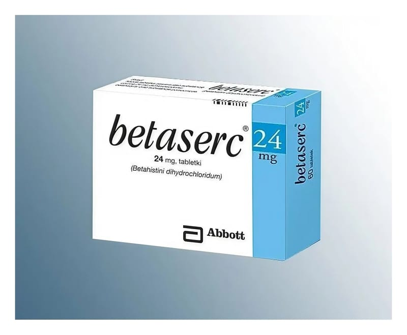

Betaserc 24 mg Tablet, 60 Adet

Ne için kullanılır
KT · Bölüm 1BETASERC
ağız yoluyla kullanılan, yuvarlak, bikonveks, beyaz veya beyaza yakın, kenarları eğimli, bir yüzü 24 baskılı, diğer yüzü çentikli tablettir. Çentik tableti iki eşit doza bölmek üzere değil, yutma kolaylığı sağlamak amacıyla bölünebilmesi için tasarlanmıştır.
BETASERC®etkin madde olarak 24 mg betahistin dihidroklorür içerir. BETASERC ,
“histamin (bağışıklık sistemi tarafından, vücudun savunma mekanizmasının bir parçası olarak bazı beyaz kan hücrelerinden salınan bir maddedir) benzeri” bir ilaçtır.
Meniere hastalığının tedavisinde kullanılır. Meniere hastalığının belirtileri aşağıdakileri içerir:
- Baş dönmesi (vertigo) ve bulantı veya kusma - Kulak çınlaması - İşitme kaybı veya işitme zorluğu
Baş dönmesi (vertigo), iç kulağınızın dengenizi kontrol eden bir bölümünün uygun şekilde çalışmamasından kaynaklanır (“vestibular vertigo” olarak adlandırılır.) BETASERC ,
iç kulağınızdaki kan dolaşımını destekleyerek etki gösterir. Bu şekilde bu alandaki basınç birikmesi azalır.